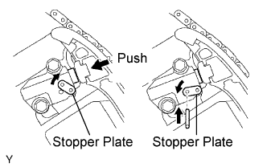
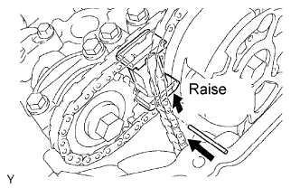
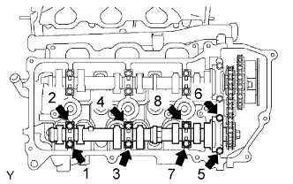
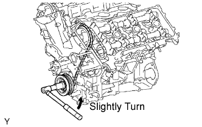
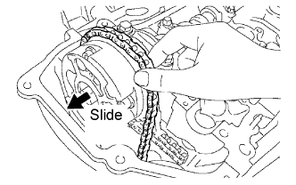
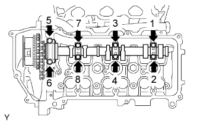
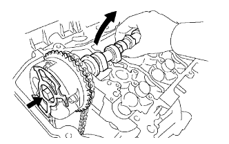

CAMSHAFT > REMOVAL |
| 1. REMOVE FRONT FENDER SPLASH SHIELD SUB-ASSEMBLY LH |
 |
Remove the 3 bolts and screw.
Turn the clip indicated by the arrow in the illustration to remove the fender splash shield.
| 2. REMOVE FRONT FENDER SPLASH SHIELD SUB-ASSEMBLY RH |
| 3. REMOVE NO. 1 ENGINE UNDER COVER SUB-ASSEMBLY |
 |
Remove the 10 bolts and under cover.
| 4. REMOVE UPPER RADIATOR SUPPORT SEAL |
 |
Remove the 7 clips and radiator support seal.
| 5. DRAIN ENGINE COOLANT |
Loosen the radiator drain cock plug and 2 cylinder block drain cock plugs.
Remove the radiator cap. Then drain the coolant.
Tighten the 2 cylinder block drain cock plugs.

Tighten the radiator drain cock plug by hand.
| 6. REMOVE V-BANK COVER |
 |
Remove the 2 cap nuts and V-bank cover.
| 7. REMOVE NO. 2 AIR CLEANER HOSE |
 |
Loosen the 2 hose clamps and remove the air cleaner hose.
| 8. REMOVE AIR CLEANER ASSEMBLY |
 |
Disconnect the No. 2 ventilation hose.
Detach the hose clamp.
 |
Disconnect the vacuum hose.
Disconnect the MAF meter connector.
Using a clip remover, detach the 2 wire harness clamps.
 |
Loosen the hose clamp.
Remove the 2 bolts and air cleaner assembly.
| 9. REMOVE INTAKE AIR SURGE TANK |
 |
Disconnect the throttle body connector.
Disconnect the No. 4 water by-pass hose.
Disconnect the No. 5 water by-pass hose.
 |
Disconnect the purge line hose.
Disconnect the purge VSV connector.
Disconnect the No. 1 ventilation hose.
 |
Disconnect the vacuum switching valve (for ACIS) connector.
Using a clip remover, detach the 2 wire harness clamps.
 |
Remove the 2 bolts and throttle body bracket.
 |
Using a clip remover, detach the wire harness clamp.
 |
Remove the bolt and bracket from the No. 1 surge tank stay.
Remove the bolt and oil baffle plate.
 |
Remove the 2 bolts and No. 1 surge tank stay.
 |
for Manual Transmission:
Remove the nut.
 |
Remove the 2 bolts and No. 2 surge tank stay.
 |
Remove the 2 nuts.
Using an 8 mm hexagon wrench, remove the 4 bolts. Then remove the intake air surge tank and gasket.
| 10. REMOVE IGNITION COIL ASSEMBLY |
Disconnect the 6 connectors.
Remove the 6 bolts and ignition coils.
| 11. REMOVE CYLINDER HEAD COVER SUB-ASSEMBLY RH |
 |
Remove the 10 bolts, 3 seal washers, 2 nuts, cylinder head cover and gasket.
| 12. REMOVE CYLINDER HEAD COVER SUB-ASSEMBLY LH |
 |
Remove the 10 bolts, 3 seal washers, 2 nuts, cylinder head cover and gasket.
| 13. SET NO. 1 CYLINDER TO TDC/COMPRESSION |
 |
Turn the crankshaft pulley, and align its groove with the timing mark "0" of the timing chain cover.
 |
Check that the timing marks of the camshaft timing gears and sprockets are aligned with the timing marks of the bearing caps as shown in the illustration.
If not, turn the crankshaft 1 complete revolution (360°) and align the timing marks as above.
| 14. REMOVE NO. 1 CHAIN TENSIONER ASSEMBLY |
 |
Remove the 4 bolts, timing chain cover plate and gasket.
 |
While turning the stopper plate of the tensioner clockwise, push in the plunger of the chain tensioner as shown in the illustration.
While turning the stopper plate of the tensioner counterclockwise, insert a bar of φ3.5 mm (0.138 in.) into the holes on the stopper plate and tensioner to fix the stopper plate in place.
Remove the 2 bolts and chain tensioner.
| 15. REMOVE NO. 2 CAMSHAFT |
 |
While raising the No. 2 chain tensioner, insert a pin of φ1.0 mm (0.0394 in.) into the hole to fix the tensioner in place.
 |
Hold the hexagonal portion of the No. 2 camshaft with a wrench, and remove the camshaft timing sprocket set bolt.
Separate the camshaft timing sprocket from the No. 2 camshaft.
 |
Rotate the camshaft counterclockwise using a wrench so that the cam lobes of the No. 1 cylinder face upward as shown in the illustration.
 |
Using several steps, loosen and remove the 8 bearing cap bolts uniformly in the sequence shown in the illustration.
Remove the 4 bearing caps and No. 2 camshaft.
| 16. REMOVE NO. 2 CHAIN TENSIONER ASSEMBLY |
 |
Remove the No. 2 chain tensioner bolt, and then remove the No. 2 chain tensioner and camshaft timing sprocket.
| 17. REMOVE NO. 1 CAMSHAFT |
 |
Hold the hexagonal portion of the No. 1 camshaft with a wrench, and loosen the camshaft timing gear set bolt.
 |
Slide the camshaft timing gear and separate the No. 1 chain from the camshaft timing gear.
 |
Rotate the No. 1 camshaft counterclockwise using a wrench so that the cam lobes of the No. 1 cylinder face downward as shown in the illustration.
 |
Using several steps, loosen and remove the 8 bearing cap bolts in the sequence shown in the illustration.
Remove the 4 bearing caps.
 |
Remove the camshaft timing gear set bolt with the No. 1 camshaft lifted up, and then remove the No. 1 camshaft and camshaft timing gear with the No. 2 chain.
 |
Tie the No. 1 chain with a string as shown in the illustration.
| 18. REMOVE NO. 4 CAMSHAFT SUB-ASSEMBLY |
 |
While pushing down the No. 3 chain tensioner, insert a pin of φ1.0 mm (0.0394 in.) into the hole to fix the tensioner in place.
 |
Hold the hexagonal portion of the No. 4 camshaft with a wrench, and remove the camshaft timing sprocket set bolt.
Separate the camshaft timing sprocket from the No. 4 camshaft.
 |
Using several steps, loosen and remove the 8 bearing cap bolts uniformly in the sequence shown in the illustration.
Remove the 4 bearing caps and No. 4 camshaft.
| 19. REMOVE NO. 3 CHAIN TENSIONER ASSEMBLY |
 |
Remove the No. 3 chain tensioner bolt, and then remove the No. 3 chain tensioner and camshaft timing sprocket.
| 20. REMOVE NO. 3 CAMSHAFT SUB-ASSEMBLY |
 |
Release the chain tension between the camshaft timing gear (LH bank) and crankshaft timing gear by turning the crankshaft pulley counterclockwise slightly.
 |
Hold the hexagonal portion of the No. 3 camshaft with a wrench, and loosen the camshaft timing gear set bolt.
 |
Slide the camshaft timing gear and separate the No. 1 chain from the camshaft timing gear.
 |
Using several steps, loosen and remove the 8 bearing cap bolts uniformly in the sequence shown in the illustration.
Remove the 4 bearing caps.
 |
Remove the camshaft timing gear set bolt with the No. 3 camshaft lifted up, and then remove the No. 3 camshaft and camshaft timing gear with the No. 2 chain.
 |
Tie the No. 1 chain with a string as shown in the illustration.